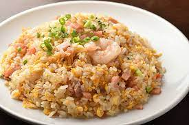

Fried Rice!

This recipe is amazing for a fullfilling meal that you can eat alone or share with others. Its relatively easy to make and quick to prepare.
Ingredients
- 2 large eggs
- 1 cup of steamed rice
- your choice of chicken, pork or shrimp, cut into pieces
- soy sauce
- peas, carrots or both
- salt and pepper
Steps
- First cook the selected choice meat on medium heat, add soy sauce then put to the side
- Then add the vegetables of your choice, if frozen cook until soft
- Add the eggs to the side, cook until scrambled and mix
- Finally add all of the ingredients together in the pan, and cook until the meat is warm again
- Serve on bowls after mixing and enjoy